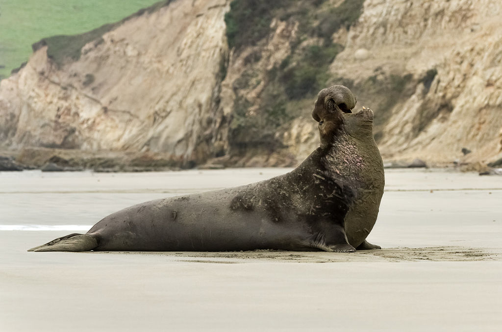
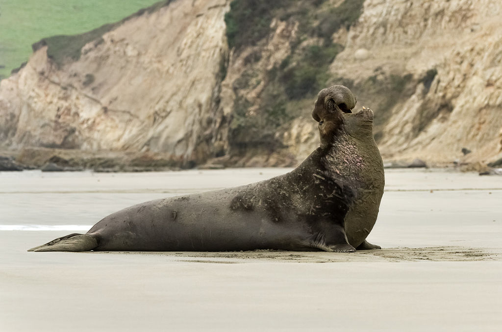

Falando um pouco de tudo sobre as focas
By Isaac Porpino
Explorando o mundo das focas

Segurem suas nadadeiras, porque estamos prestes a embarcar em uma jornada, na vida das focas! Esses adoráveis mamíferos aquáticos são verdadeiras estrelas do oceano, e eles têm algumas histórias legais para contar.
Estilo e movimentos

As focas são conhecidas por suas habilidades elegantes de natação, muitas vezes rivalizando com as dos nadadores olímpicos de primeira linha. Suas nadadeiras, semelhantes a atletas bem treinados, os guiam sem esforço pela água com uma graça hipnotizante.
Um aspecto fascinante é o seu isolamento natural: camadas de gordura. Este mecanismo de calor embutido permite que eles prosperem em várias temperaturas da água. Imagine essas criaturas deslizando sob o
Pontos de encontro de focas

Adivinha onde você pode encontrar essas criaturas fantásticas? Das zonas de mergulho polares geladas aos pontos frios costeiros ensolarados, as focas sabem como escolher, suas almofadas. Eles adoram descansar em costas rochosas, exibindo seus, pêlos beijados pelo sol
Conheça a tripulação do Seal

 


Conheça os VIPs Pinípedes Muito Importantes! Temos a foca do porto, a foca cinza, o elefante-marinho sim, aquele com o hilário, schnoz e a feroz foca-leopardo. É como um elenco repleto de estrelas de
Fatos interessantes sobre focas

Mergulhe no mundo das focas, aquelas encantadoras criaturas marinhas com um toque extraordinário. Desde prender a respiração como campeões subaquáticos até usar seus bigodes para GPS subaquático, essas maravilhas marinhas são bastante espetaculares.
As focas arrasam na arte de prender a respiração, deixando qualquer mergulhador profissional verde de inveja. E aqueles bigodes? Eles são como os próprios da natureza, GPS guiando esses exploradores subaquáticos através de suas aventuras aquáticas.
Para um mergulho mais profundo na grandiosidade das focas, visite sealworld.com